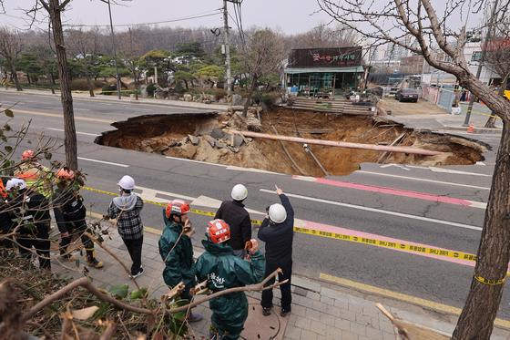

[단독] 명일동 땅꺼짐 ‘설계보강’ 지적했지만…땅 굳힐 시멘트액, 설계의 66%만 시공

지난해 30대 오토바이 운전자의 목숨을 앗아간 서울 명일동 대형 땅꺼짐 사고.
국토부는 이 사고가 '자연재해'에 가깝다고 결론을 내렸습니다.
하지만 JTBC 취재 결과 설계 전부터 서울시가 위험성을 지적했고, 구체적인 설계 방식까지 제시했던 것으로 확인됐습니다.
하지만 시공사는 지반을 고정하는 강관을 충분히 박지 않았고, 시멘트 액도 설계 용량의 2/3만 투입했습니다.
누구도 책임을 지지 않은 채 터널 공사는 다시 시작됐고 인근 주민들은 불안에 떨고 있습니다.
시멘트 넣어야 할데 안 넣어서 사람 죽이고 넣으면 안될 데 넣어서 사람 죽이고
국토부 등신새끼들 진짜 ㅋㅋㅋ